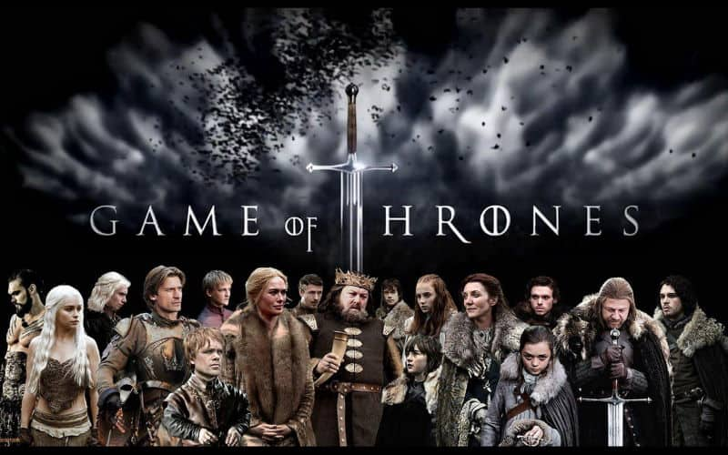
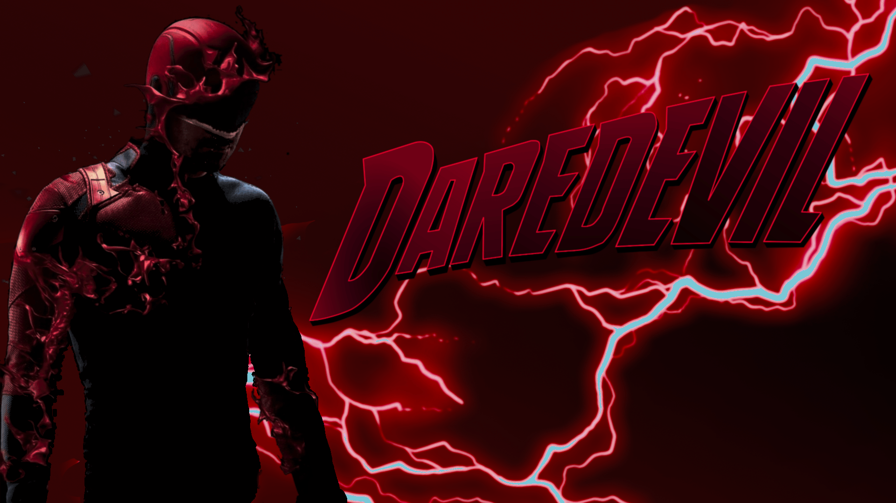

Sci-Fi & Fantasy
- Breaking Bad
- Agents of Shield
- Game of Thrones
- Stranger Things
- WandaVision
- Supernatural
- Daredevil
- Altered Carbon
- Westworld
- Jessica jones
- Utopia
- Dark
Mild-mannered high school chemistry teacher Walter White thinks his life can't get much worse. His salary barely makes ends meet, a situation not likely to improve once his pregnant wife gives birth, and their teenage son is battling cerebral palsy. But Walter is dumbstruck when he learns he has terminal cancer. Realizing that his illness probably will ruin his family financially, Walter makes a desperate bid to earn as much money as he can in the time he has left by turning an old RV into a meth lab on wheels.
Trailer : Breaking Bad

The worldwide law-enforcement organization known as S.H.I.E.L.D. (Strategic Homeland Intervention Enforcement and Logistics Division) employs an elite team of agents who investigate strange occurrences around the globe and beyond. Its members -- each of whom brings a specialty to the group -- work to protect those who cannot protect themselves from extraordinary and inconceivable threats, including a formidable group known as Hydra. The series is set in the Marvel Cinematic Universe and acknowledges the continuity of the franchise's films and other television series.
Trailer : Agents of Shield
George R.R. Martin's best-selling book series "A Song of Ice and Fire" is brought to the screen as HBO sinks its considerable storytelling teeth into the medieval fantasy epic. It's the depiction of two powerful families -- kings and queens, knights and renegades, liars and honest men -- playing a deadly game for control of the Seven Kingdoms of Westeros, and to sit atop the Iron Throne. Martin is credited as a co-executive producer and one of the writers for the series, whose shooting locations include Northern Ireland, Malta, Croatia and Spain.
Trailer : Game of Thrones

The disappearance of a boy in Hawkins, Ind., is just the beginning of strange paranormal happenings in the small Midwestern town.
Trailer : Stranger Things

Living idealized suburban lives, super-powered beings Wanda and Vision begin to suspect that everything is not as it seems.
Trailer : WandaVision
This haunting series follows the thrilling yet terrifying journeys of Sam and Dean Winchester, two brothers who face an increasingly sinister landscape as they hunt monsters. After losing their mother to a supernatural force, the brothers were raised by their father as soldiers who track mysterious and demonic creatures. Violent memories and relationship-threatening secrets add additional burdens on Sam and Dean as they investigate all things that go bump in the night. As old tricks and tools are rendered useless and friends betray them, the brothers must rely on each other as they encounter new enemies.
Trailer : Supernatural

The first in a planned series of shows detailing the Marvel universe, "Daredevil" follows Matt Murdock, attorney by day and vigilante by night. Blinded in an accident as a child, Murdock uses his heightened senses as Daredevil to fight crime on the streets of New York after the sun goes down. While Murdock's day job requires him to believe in the criminal justice system, his alter ego does not follow suit, leading him to take the law into his own hands to protect his Hell's Kitchen neighborhood and the surrounding communities.
Trailer : Daredevil

More than 300 years in the future, society has been transformed by new technology, leading to human bodies being interchangeable and death no longer being permanent. Takeshi Kovacs is the only surviving soldier of a group of elite interstellar warriors who were defeated in an uprising against the new world order. His mind was imprisoned for centuries until impossibly wealthy businessman Laurens Bancroft offers him the chance to live again. Kovacs will have to do something for Bancroft, though, if he wants to be resurrected. Bancroft's request of Kovacs is to solve a murder -- Bancroft's. "Altered Carbon" is based on Richard K. Morgan's cyberpunk noir novel of the same name.
Trailer : Altered Carbon

Westworld isn't your typical amusement park. Intended for rich vacationers, the futuristic park -- which is looked after by robotic "hosts" -- allows its visitors to live out their fantasies through artificial consciousness. No matter how illicit the fantasy may be, there are no consequences for the park's guests, allowing for any wish to be indulged. "Westworld" is based on the 1973 Michael Crichton movie of the same name and features an all-star cast.
Trailer : Westworld

This Netflix original chronicles the life of one of the darker Marvel characters, the mysterious Jessica Jones. When a tragedy puts an end to her short-lived career as a superhero, Jessica settles in New York City and opens her own detective agency, called Alias Investigations, which seems to be called into cases involving people who have special abilities. Suffering from post-traumatic stress syndrome, Jessica wants to do good, but her primary interest isn't in saving the world, it's saving her apartment and getting through each day. Based on a graphic novel intended for adults, this is not a superhero story for the kids.
Trailer : Jessica jones
A group of young adults, who meet online, get a hold of a cult underground graphic novel, which not only pins them as a target of a shadowy deep state organization, but also burdens them with the dangerous task of saving the world.
Trailer : Utopia
When two children go missing in a small German town, its sinful past is exposed along with the double lives and fractured relationships that exist among four families as they search for the kids. The mystery-drama series introduces an intricate puzzle filled with twists that includes a web of curious characters, all of whom have a connection to the town's troubled history -- whether they know it or not. The story includes supernatural elements that tie back to the same town in 1986. "Dark" represents the first German original series produced for Netflix.
Trailer : Dark